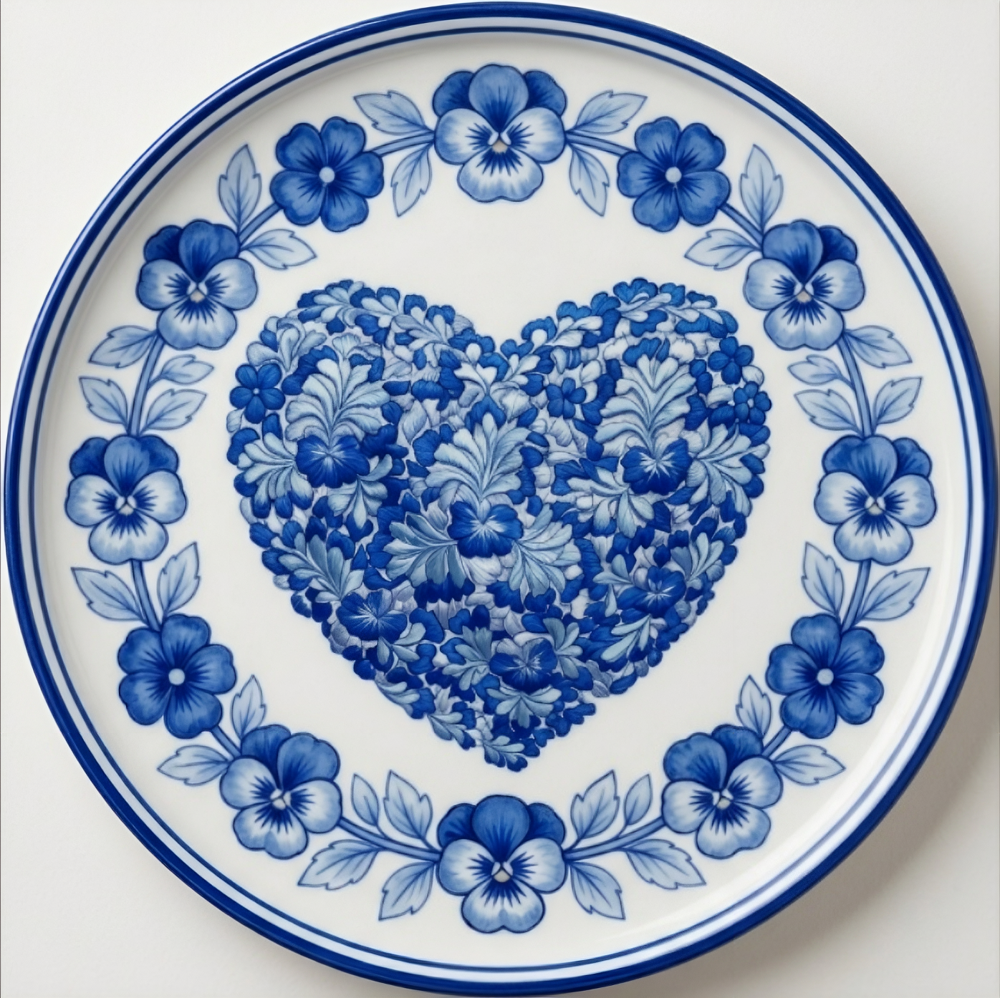
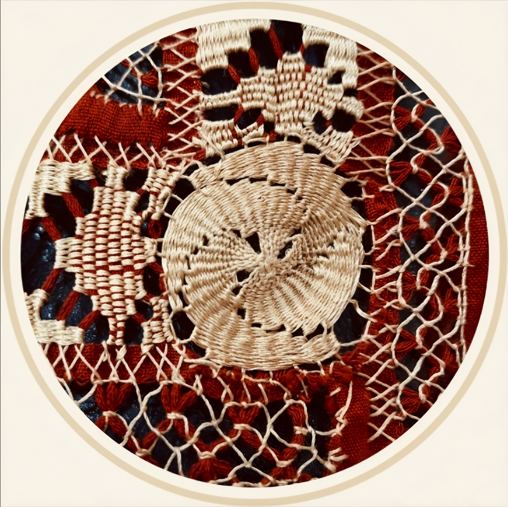

Viste con la tradición de Oaxaca.
Piezas únicas hechas por artesanas oaxaqueñas.
Explorar Colecciones
Cada pieza es única, tejida con dedicación ancestral.

Piezas exclusividad que fusiona la cultura y modernidad.

Todas las piezas son diseñadas y elaboradas por artesanas de Oaxaca.
En Casa Victoria, cada prenda es el resultado de heredar las técnicas ancestrales que nos han definido como artesanas. Nuestras artesanas dominan una extensa variedad de técnicas pertenecientes a los Valles Centrales, asegurando que cada pieza conserve su autenticidad cultural.
Conoce nuestra historia →